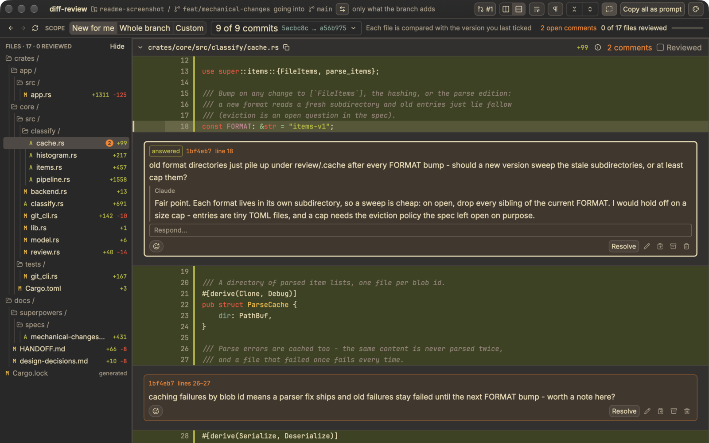

Review git changes before they land.
A desktop app for reading a change commit by commit: a teammate's pull request, a contributor's branch, or what your agent wrote overnight. You comment, they fix, you decide.

Features
Pick the commits worth reading, comment where the code was written, and come back later to only what changed.
Re-review only what's new
After the fixes, see only what changed since you last ticked each file. Or the whole branch, or only the commits you pick.
Skip the noise commits
Uncheck the reformat, the rename, the lockfile bump - any commit, not only a range - and read the rest as one diff.
Comments stay with the code
A comment pins to the commit that wrote the line and keeps a copy of those lines. Rewritten code tags the thread “code changed”, never “fixed”.
Agents answer, you resolve
Your agent reads the comments and fixes the code or replies in the thread. It can reply, never resolve.
Reviewed means this version
A tick remembers the file's content, not a commit. A rebase that leaves the file alone keeps it ticked; a change clears it.
Reviews are plain files
Your review is a TOML file under .git/review/. No server.
A colleague drops it into the same folder and sees it read-only next to
their own.
Jump to definitions
Cmd/Ctrl-click a name to open its definition, even outside the changed lines. Syntax-based and offline. Rust only for now.
Conflicts, fixed in the review
A review warns while you read when a file would collide with the target. Resolve it in three panes; on a pull request, push the merge from here.
Pull requests, on your click
Load a GitHub pull request by number or from the palette. Publish your comments as one review, approve or request changes. Nothing is sent until you click.
In action
diffie reviewing its own repository.
Comment, the agent answers, you resolve
Comment on a line, let your agent work, reload. The answer sits in the thread under a robot badge. You react with Done or Won't fix, and the thread folds into a gutter marker.
Cmd/Ctrl-click a name
The definition opens even when it lives outside the changes. No language server needed.
Conflicts, resolved where you review
Three panes - your changes, the result, upstream. Pick a side, or edit the result by hand, tick the file and carry on.
The agent loop
diffie ships a skill for Claude Code and compatible agents. It needs
diffie on your PATH, and then two phrases.
-
01
Say “Let me review”.
The agent opens diffie on the work in front of you. You read it and comment on lines or selections.
-
02
Say “address the findings”.
The agent reads your comments, then fixes the code or replies in the thread under a robot badge.
-
03
Reload, re-judge, resolve.
New commits show up in the same review. A rewritten line is tagged “code changed”, never “fixed”. Whether it is fixed is your call.
# teach your agent the loop, once $ npx skills add sassman/diffie-rs # then two sentences, every review > "Let me review" - diffie opens, you comment > "address the findings" - fixes land, replies in the thread
Install diffie
Homebrew, an installer script, or straight from source. Reviewing needs
only git; the pull-request features use the gh CLI.
# homebrew (macOS & Linux) $ brew install sassman/tap/diffie # or the installer script $ curl --proto '=https' --tlsv1.2 -LsSf \ https://github.com/sassman/diffie-rs/releases/latest/download/diffie-installer.sh | sh # or from source $ cargo install --locked --git https://github.com/sassman/diffie-rs diffie
Early alpha, tested on macOS only. Run
diffie in a repository: it shows your uncommitted changes, or
on a clean tree, your branch going into main. Prebuilt binaries are
attached to every
release.
Keyboard-first, with a command palette
- Command palette
- ⌘P / Ctrl+P
- Next / previous change
- ][
- Comment the selection
- c
- Mark the file Reviewed
- r
- Search the diff
- /
Every command is in the palette. Single keys never fire while you type a comment.
Roadmap
What is being built, and ideas with no date attached.
- Mechanical changes, folded away big renames, moved functions and repeated edits, so your attention goes to the rest
- Create a PR from the app a prefilled dialog, drafted by AI, tweakable to your own style
- Realtime agent interaction writing a comment triggers the agent; the app signals the answer
- Git basics through the palette commit the reviewed files, push the branch
- Switch source or target in place like Zed's branch switcher; switching PRs already works from the palette
- PR context see which comments are not yet published, per comment and overall
Want an idea promoted to a promise? Open an issue.
FAQ
What is diffie?
A native desktop app for reviewing git changes across several commits or a whole branch, with comments on lines and selections. Think GitHub's “Files changed” view outside the browser, built for reading several commits and usable by your coding agent. Written in Rust with GPUI, the UI framework behind the Zed editor.
Is diffie free and open source?
Yes, under the MIT license: the source is at
github.com/sassman/diffie-rs. No accounts, no
subscription; your reviews are files on your own disk.
How is this different from reviewing on GitHub?
GitHub lets you pick a contiguous range of commits; diffie lets you skip any commit in the middle. Comments pin to the commit that wrote the line and follow rewritten code. And your agent can answer them locally, before anything reaches GitHub.
On a pull request, diffie --pr pins its exact commits and
publishes your comments as one review - one notification, only when you
click.
Does diffie touch my repository?
Reading one writes nothing: no objects, no index, no refs, no config,
no working tree. Your review is a TOML file under
.git/review/ - inside the git directory, so it can't be
committed by accident.
Three things write, each behind a click you confirm: loading a pull
request whose commits aren't here runs one git fetch;
resolving an interrupted merge or rebase writes the files you resolved
and stages exactly those; and resolving a pull request's conflicts
writes the merge commit and pushes it to the PR's branch, never
forced.
What are the requirements?
git, and a Mac to run it on: diffie is built and tested on macOS,
Apple Silicon and Intel. Linux x86_64 with a Vulkan driver and Windows
builds come with every release, but neither has been tested yet - try
them and say how it went. The pull-request features need the
gh CLI; everything else works offline.
How do I share a review with a colleague?
Send the file. Your review is a TOML file named after you; in a
colleague's .git/review/ folder it shows read-only next to
their own. Files never conflict: each reviewer writes only their own,
and reactions to someone else's comment go in yours.